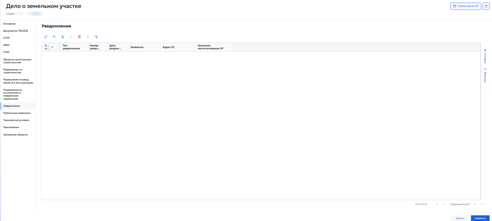
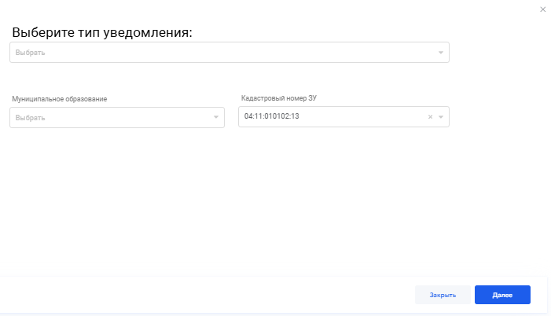
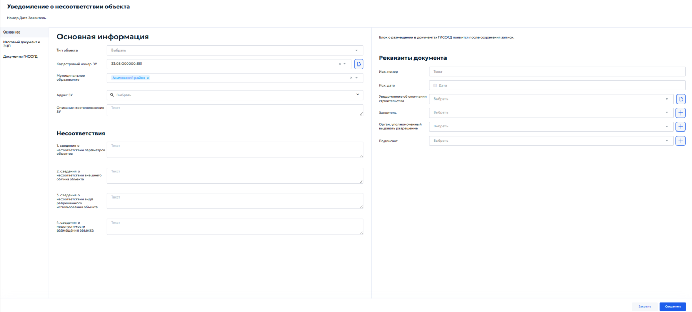
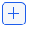
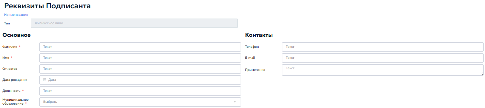
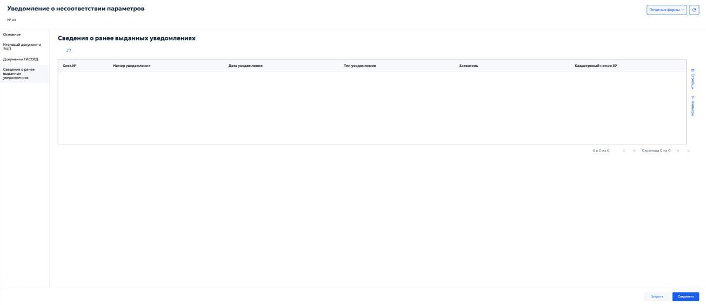
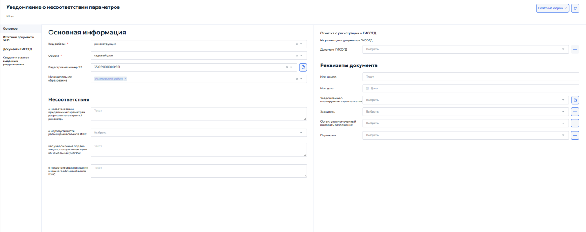
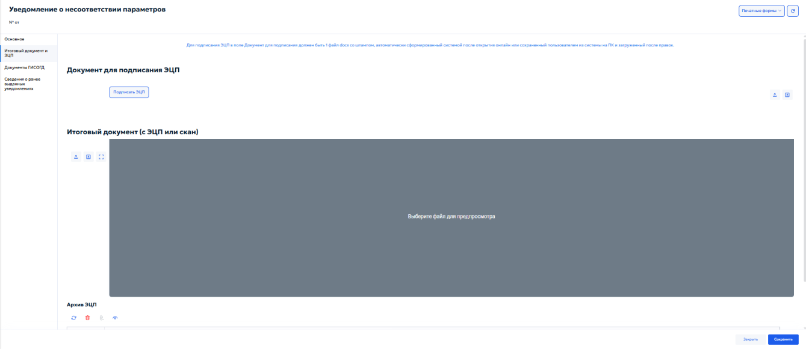
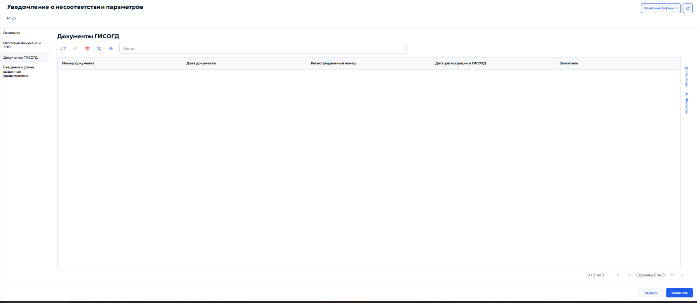

5.4.13.9 Вкладка «Уведомлени延
Вкладка «Уведомление» в карточке «Дело о земельном участке» предназначена для учёта уведомлений, направляемых застройщиком в уполномоченный орган. В соответствии с Градостроительным кодексом РФ застройщик обязан уведомить орган, выдавший разрешение на строительство, о планируемом начале строительства и о его завершении. В системе также фиксируются иные виды уведомлений, предусмотренные нормативными актами.
Во вкладке отображается перечень ранее зарегистрированных уведомлений (рисунок 124).

Общие правила работы с табличными формами описаны в пункте 4.3.
Для добавления уведомления нажать кнопку добавления на панели инструментов. Откроется карточка создания уведомления (рисунок 125).

В карточке создания уведомления указать следующие данные:
-
«Выберите тип уведомления» — справочник видов уведомлений. Выбрать нужное значение;
-
«Муниципальное образование» — указать муниципальное образование, на территории которого расположен земельный участок;
-
«Кадастровый номер ЗУ» — указать кадастровый номер земельного участка.
5.4.13.9.1 Карточка «Уведомление о несоответствии объект໶
Выбрать тип «Уведомление о несоответствии построенных или реконструированных объектов индивидуального жилищного строительства или садового дома требованиям законодательства о градостроительной деятельности» и нажать кнопку «Далее». Откроется специализированная карточка (рисунок 126).

Карточка «Уведомление о несоответствии объекта» предназначена для фиксации факта выявления органом власти несоответствий параметров построенного или реконструированного объекта капитального строительства требованиям проектной документации, разрешению на строительство или техническим регламентам.
Карточка содержит вкладки «Основное», «Итоговый документ и ЭЦП», «Документы ГИСОГД».
Во вкладке «Основное» в блоке «Основная информация» указать следующие данные:
-
«Тип объекта» — выбрать тип капитального строительства из выпадающего списка;
-
«Кадастровый номер ЗУ» — выбрать кадастровый номер земельного участка, на котором расположен объект, из выпадающего списка. Если номера ЗУ нет в списке — нажать кнопку добавления и указать его вручную;
-
«Муниципальное образование» — указать из выпадающего списка муниципальное образование, на территории которого расположен объект;
-
«Адрес ЗУ» — указать адрес земельного участка. Порядок заполнения адреса описан в разделе 5.4.8 настоящего Руководства;
-
«Описание местоположения ЗУ» — при необходимости указать дополнительное описание ориентиров и местоположения участка.
Блок «Несоответствия» предназначен для детализации выявленных нарушений.
В блоке указывается следующая информация:
-
«Сведения о несоответствии параметров объекта» — указать, в чем заключается несоответствие параметров объекта проектной документации или разрешению на строительство;
-
«Сведения о несоответствии внешнего объекта» — указать несоответствие внешнего облика объекта утвержденным требованиям;
-
«Сведения о несоответствии вида разрешенного использования объекта» — описать несоответствие фактического использования объекта установленному виду разрешенного использования земельного участка;
-
«Сведения о недопустимости разрешенного объекта» — указать причины, по которым размещение или сохранение объекта на данном участке является недопустимым.
В блоке «Реквизиты документа» указать сведения уведомления:
-
«Иск.номер» — исходящий регистрационный номер уведомления;
-
«Иск.дата» — дата исходящего уведомления;
-
«Уведомление об окончании строительства» — выбрать из выпадающего списка тип уведомления об окончании строительства. При нажатии кнопки выбора будет выполнена загрузка необходимого уведомления;
-
«Заявитель» — выбрать из справочника физическое или юридическое лицо, направившее уведомление об окончании строительства. При нажатии кнопки добавления открывается окно «Реквизиты ЮЛ/ФЛ/ИП/ОИВ». Подробное описание работы с окном приведено в разделе 5.2.1 настоящего Руководства;
-
«Орган, уполномоченный выдавать разрешение» — выбрать из справочника необходимый орган, выдавший разрешение на строительство. При нажатии кнопки добавления

откроется окно «Реквизиты ЮЛ/ФЛ/ИП/ОИВ»; -
«Подписант» — выбрать из справочника должностное лицо, подписавшее уведомление о несоответствии. Для указания дополнительного подписанта при необходимости нажать кнопку добавления. Откроется окно «Реквизиты подписанта» (см. пункт 5.4.13.9.1.1).
Во вкладке «Итоговый документ и ЭЦП» указать итоговую версию уведомления о несоответствии. Порядок работы с вкладкой приведён в пункте 5.4.13.7.2.
Во вкладке «Документы ГИСОГД» указать документы, связанные с уведомлением о несоответствии. Порядок работы с вкладкой описан в пунктах 5.3.2 и 5.3.3 настоящего Руководства.
5.4.13.9.1.1 Окно «Реквизиты подписант໶
Окно «Реквизиты подписанта» (рисунок 127) предназначено для указания должностного лица, уполномоченного подписывать документ.

В блоке «Основное» указать данные подписанта: ФИО, дату рождения, должность и муниципальное образование.
В блоке «Контакты» указать контактные данные подписанта: телефон, e-mail, примечание.
5.4.13.9.2 Карточка «Уведомление о соответствии объект໶
Карточка «Уведомление о соответствии объекта» (рисунок 128) открывается при выборе одноимённого типа уведомления.

Данный вид уведомления направляется застройщиком в уполномоченный орган после завершения строительства или реконструкции объекта ИЖС или садового дома для подтверждения соответствия параметров объекта требованиям, установленным разрешением на строительство (при его наличии) или уведомлением о соответствии планируемого строительства. На основании положительного уведомления о соответствии орган власти принимает решение о выдаче уведомления о соответствии построенного объекта.
Карточка содержит вкладки «Основное», «Итоговый документ и ЭЦП», «Документы ГИСОГД».
Во вкладке «Основное» в блоке «Основная информация» указать следующие данные:
-
«Тип объекта» — указать тип объекта из выпадающего списка;
-
«Кадастровый номер ЗУ» — выбрать кадастровый номер земельного участка, на котором расположен объект, из выпадающего списка. Если номера ЗУ нет в списке — нажать кнопку добавления и указать его вручную;
-
«Муниципальное образование» — выбрать из выпадающего списка муниципальное образование, на территории которого расположен объект;
-
«Адрес ЗУ» — указать адрес земельного участка. Порядок заполнения адреса описан в разделе 5.4.8 настоящего Руководства;
-
«Описание местоположения ЗУ» — при необходимости указать дополнительное описание ориентиров и местоположения участка.
В блоке «Реквизиты документа» указываются следующие данные:
-
«Иск.номер» — ввести исходящий регистрационный номер уведомления;
-
«Исх.дата» — указать дату исходящего уведомления с помощью календаря;
-
«Уведомление об окончании строительства» — выбрать из списка ранее зарегистрированное уведомление об окончании строительства, к которому относится данное уведомление о соответствии. При нажатии кнопки добавления дополнительное уведомление указывается;
-
«Заявитель» — выбрать из выпадающего списка физическое или юридическое лицо, направившее уведомление. При нажатии кнопки добавления в окне «Реквизиты ЮЛ/ФЛ/ИП/ОИВ» дополнительный заявитель вносится, если его нет в списке. Описание работы с окном приведено в разделе 5.2.1 настоящего Руководства;
-
«Орган, уполномоченный выдавать разрешение» — выбрать из выпадающего списка орган местного самоуправления или исполнительной власти, выдавший разрешение на строительство. При нажатии кнопки добавления в окне «Реквизиты ЮЛ/ФЛ/ИП/ОИВ» дополнительный орган вносится, если его нет в списке. Описание работы с окном приведено в разделе 5.2.1 настоящего Руководства;
-
«Подписант» — выбрать из справочника должностное лицо, подписавшее уведомление о соответствии. Для указания дополнительного подписанта при необходимости нажать кнопку добавления . Откроется окно «Реквизиты подписанта». Описание работы с окном приведено в разделе 5.2.1 настоящего Руководства.
Во вкладке «Итоговый документ и ЭЦП» сформировать итоговую версию уведомления о соответствии. Подробное описание работы с вкладкой приведено в пункте 5.4.13.7.2.
5.4.13.9.3 Карточка «Уведомление о несоответствии параметро⻶
Карточка «Уведомление о несоответствии параметров» (рисунок 129) открывается при выборе одноименного типа уведомления.

Карточка предназначена для оформления уведомления уполномоченного органа о несоответствии параметров планируемого строительства или реконструкции объекта ИЖС либо садового дома установленным требованиям.
Карточка содержит вкладки «Основное», «Итоговый документ и ЭЦП», «Документы ГИСОГД», «Сведения о ранее выданных уведомлениях».
Во вкладке «Основное» в блоке «Основная информация» указываются следующие данные:
-
«Вид работы» — выбрать вид работ из выпадающего списка;
-
«Объект» — выбрать тип объекта из выпадающего списка;
-
«Кадастровый номер ЗУ» — выбрать кадастровый номер земельного участка, к которому относится уведомление. При необходимости нажать кнопку справа от поля, чтобы открыть связанную карточку;
-
«Муниципальное образование» — указать муниципальное образование, на территории которого расположен земельный участок.
Блок «Несоответствия» предназначен для указания причин подготовки уведомления. В блоке заполняются следующие сведения:
-
«О несоответствии предельным параметрам разрешенного строительства/реконструкции» — указать сведения о несоответствии параметров объекта установленным предельным параметрам;
-
«О недопустимости размещения объекта ИЖС» — выбрать или указать основание, по которому размещение объекта ИЖС на земельном участке недопустимо;
-
«Что уведомление подано лицом, с отсутствием прав на земельный участок» — указать сведения о заявителе и отсутствии прав на земельный участок;
-
«О несоответствии описания внешнего облика объекта ИЖС» — указать сведения о несоответствии описания внешнего облика объекта установленным требованиям.
Во вкладке «Основное» также расположен блок «Отметка о регистрации в ГИСОГД». В нем отображается статус размещения уведомления в документах ГИСОГД. Если документ еще не размещен, в карточке отображается отметка «Не размещен в документах ГИСОГД». В поле «Документ ГИСОГД» выбрать связанный документ ГИСОГД или нажать кнопку добавления справа от поля.
В блоке «Реквизиты документа» указываются следующие данные:
-
«Исх. номер» — ввести исходящий номер уведомления;
-
«Исх. дата» — указать дату исходящего уведомления с помощью календаря;
-
«Уведомление о планируемом строительстве» — выбрать связанное уведомление о планируемом строительстве. При необходимости нажать кнопку справа от поля, чтобы открыть связанную карточку;
-
«Заявитель» — выбрать заявителя из справочника. Если нужного заявителя нет в списке, нажать кнопку добавления справа от поля;
-
«Орган, уполномоченный выдавать разрешение» — выбрать орган местного самоуправления или исполнительной власти, уполномоченный выдавать разрешение;
-
«Подписант» — выбрать должностное лицо, подписывающее уведомление. При необходимости нажать кнопку добавления справа от поля.
Для формирования печатного документа использовать кнопку «Печатные формы». После заполнения карточки нажать «Сохранить». Для выхода без сохранения нажать «Закрыть».
Во вкладке «Итоговый документ и ЭЦП» выполняется подготовка, подписание и загрузка итогового документа уведомления (рисунок 130).

В поле «Документ для подписания ЭЦП» должен быть загружен один файл формата DOCX со штампом, автоматически сформированный системой после открытия онлайн, либо файл, сохраненный пользователем из системы на ПК и загруженный после внесения правок. Для подписания документа нажать кнопку «Подписать ЭЦП».
В блоке «Итоговый документ (с ЭЦП или скан)» загрузить подписанный файл или скан итогового документа и проверить его в области предварительного просмотра. В блоке «Архив ЭЦП» отображаются сведения об электронных подписях; доступны обновление, удаление, загрузка файла и просмотр подписи.
Во вкладке «Документы ГИСОГД» отображаются документы ГИСОГД, связанные с уведомлением (рисунок 131).

Сведения представлены в табличной форме с колонками «Номер документа», «Дата документа», «Регистрационный номер», «Дата регистрации в ГИСОГД», «Заявитель». Для поиска документа использовать поле «Поиск». Порядок добавления и связывания документов ГИСОГД описан в пунктах 5.3.2 и 5.3.3 настоящего Руководства.
Во вкладке «Сведения о ранее выданных уведомлениях» отображаются ранее выданные уведомления, связанные с земельным участком или заявителем (рисунок 132).

Данные отображаются в табличной форме с колонками «Сист. №», «Номер уведомления», «Дата уведомления», «Тип уведомления», «Заявитель», «Кадастровый номер ЗУ». Вкладка используется для проверки ранее зарегистрированных уведомлений перед сохранением текущей карточки.